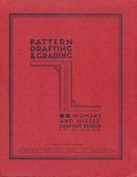

Vintage Sewing Reference Library, Inc. offers free online access to public domain sewing books. Learn more about us. If you are interested, there are a number of ways you can support this site. If you would like to be notified when new works are added to VintageSewing.info, please sign up for our notification list.
What's New?
Search
Are you looking for specific information? Search for it.
Browse
If you would prefer, you can browse a specific decade (pre-1900, 1900's, 1910's, 1920's, 1930's, 1940's, 1950's), or browse by category:
- dressmaking
- school textbook
- sewing course
- pattern design (drafting, draping, etc.)
- tailoring
- glovemaking
- millinery
- laundry/dry cleaning
Top-Five List
Please take a look at the Candidates for Inclusion and vote for your preference for the next publication to be added to the library. The current top-five list of works to be added:
- The Modern Tailor, Outfitter and Clothier, A. S. Bridgland, MJI (General Editor), The Claxton Publishing Company, Ltd. (Vol. 1, 288 pages; Vol. 2, 263 pages; Vol. 3, 308 pages) 1936
- Coat and Suit Making, Minne A. Anderson, M.A., Burgess Publishing Co. (37 pages) 1931
- Dainty Work for Pleasure and Profit, Minne A. Anderson, M.A., Burgess Publishing Co. (459 pages) 1902
- A Bag of Tricks for Home Sewing, "Cotton Bags give you Tested Sewing Fabrics," Sewing with Feed Sacks. The National Cotton Council of America, (32 pages) early 1940's
Currently coding...
1957
Pattern Drafting & Grading, Women's and Misses' Garment Design, inluding junior's, sub-teens, teens, and half sizes
by M. Rohr (100 pages) 1957
Design and create patterns for your 1957 wardrobe. Exhaustive variations on bodices, skirts, sleeves, dresses, skirts, shorts, jackets, coats, capes, even shoulder pads, pajamas, nightgown and robe. Also pattern grading.
As a reward for reading this far down the page, check out our Statistics page, in which we share, among other things, some of the unexpected phrases people have used to find our site.